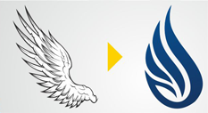

Sejarah Institut Teknologi dan Bisnis (ITB) STIKOM Bali
Berawal dari bertemunya para pemerhati, pencinta dan praktisi
pendidikan yakni Prof. Dr. Made Bandem, MA., (saat itu Rektor ISI
Jogjakarta), Dr. Dadang Hermawan (praktisi pendidikan), Drs. Ida
Bagus Dharmadiaksa, M.Si., Ak. (Dosen) dan Drs. Satria Dharma
(praktisi pendidikan) pada tahun 2.000 yang begitu menaruh perhatian
atas pesat dan dinamisnya perkembangan teknologi informasi dan
komunikasi (TIK) di dunia termasuk di Indonesia dan Bali, namun di
lain pihak perguruan tinggi bidang TIK sampai dengan jenjang sarjana
belum ada.
Maka pada tanggal 20 Mei 2001, berdirilah Yayasan Widya Dharma
Shanti yang akan menjadi Badan Penyenggara Perguruan Tinggi Swasta
dan selanjutnya diajukanlah ijin pendirian Institut Teknologi dan
Bisnis (ITB) STIKOM Bali kepada Direktorat Jenderal Pendidikan
Tinggi Kementerian Pendidikan Nasional. Dengan berbagai usaha dan
lika liku pengurusan ijin serta doa, maka pada tanggal 10 Agustus
2002 keluarlah ijin dimaksud dengan nomor 157/D/O/2002 dengan 2
jurusan / program studi yakni Sistem Komputer (jenjang S1) dan
Manajemen Informatika (jenjang D3) lalu pada tahun 2009 ada tambahan
program studi baru yakni Sistem Infomasi (jenjang S1).
Saat ini, Institut Teknologi dan Bisnis (ITB) STIKOM Bali sudah
menjadi perguruan tinggi bertaraf internasional yang sangat
dipercaya oleh masyarakat, terbukti dengan jumlah mahasiswa yang
sedang kuliah tidak kurang dari 6.000 orang dan alumni yang mencapai
hampir 4.000 orang (tahun 2015). Selain itu berbagai kerjasama dalam
bidang tri dharma perguruan tinggi telah dilakukan dengan berbagai
pihak baik instansi pemerintah, instansi/perusahaan swasta, BUMN,
BUMD, Perguruan Tinggi baik dalam maupun luar negeri.
Visi dan Misi Institut Teknologi dan Bisnis (ITB) STIKOM Bali
Visi Institut Teknologi dan Bisnis (ITB) STIKOM Bali
Visi Institut adalah menjadi perguruan tinggi unggulan dan
berkualitas Internasional di bidang ilmu pengetahuan, teknologi
dan seni.
Misi Institut Teknologi dan Bisnis (ITB) STIKOM Bali
-
Melaksanakan Tri Dharma Perguruan Tinggi secara profesional dan
berkualitas.
-
Berperan secara aktif dalam pengembangan di bidang ilmu
pengetahuan, teknologi dan seni.
-
Memberikan manfaat yang sebesar-besarnya kepada masyarakat
sekitar, regional dan nasional terkait dengan pengembangan dan
aplikasi bidang ilmu pengetahuan, teknologi dan seni.
-
Menjalin kerjasama dengan berbagai kalangan baik dalam maupun
luar negeri dalam rangka pengembangan dan peningkatan kualitas
ITB STIKOM Bali.
-
Menjadi wadah yang dapat dibanggakan dan memberikan rasa nyaman
bagi seluruh warga kampus.
-
Melaksanakan pengelolaan institusi dengan memerhatikan
prinsip-prinsip tata pamong dan tata kelola yang baik
(transparansi, akuntabilitas, bertanggungjawab, mandiri, dan
berkeadilan).
Arti Lambang Institut Teknologi dan Bisnis (ITB) STIKOM Bali
Apa makna logo baru ini?
Logo baru Institut Teknologi dan Bisnis (ITB) STIKOM Bali yang
merupakan distilasi dari beberapa materi yang diolah sehingga tidak
hanya menjadi sebuah logo yang indah, tetapi memiliki makna yang
mendalam, sehingga dapat mewakili visi dan misi dari Institut
Teknologi dan Bisnis (ITB) STIKOM Bali untuk terus maju dan
berkembang menjadi kampus ICT terbaik di dunia. Perubahan Logo
adalah gambaran (visualisasi) yang terjadi pada Institut Teknologi
dan Bisnis (ITB) STIKOM Bali di tahun 2013. Selain logo, terdapat
juga perubahan pada visi, misi, target jangka pendek dan target
jangka panjang berawal di tahun 2013 dan seterusnya.
Lambang Institut Teknologi dan Bisnis (ITB) STIKOM Bali – Gear (Roda
Gigi)
Dalam beberapa artikel tentang perkembangan teknologi, “Gear”
memegang andil besar dalam terjadinya revolusi industri yang
mengantarkan umat manusia masuk jaman modern seperti sekarang ini.
Oleh karena itu “Gear” melambangkan teknologi informasi yang menjadi
perspektif dari Institut Teknologi dan Bisnis (ITB) STIKOM Bali
untuk melangkah maju. Selain itu “Gear” juga dapat bermakna
berjalannya aktivitas institusi yang terus berlangsung seiring
dengan perkembangan teknologi.
Lambang Institut Teknologi dan Bisnis (ITB) STIKOM Bali – Fire
Api merupakan sebuah objek yang paling sering kali digunakan untuk
melambangkan semangat. Semangat yang membara ini diharapkan
memberikan energi yang positif kepada Institut Teknologi dan Bisnis
(ITB) STIKOM Bali dalam memberikan pelayanan pendidikan yang terbaik
dan juga memacu semangat daya saing Mahasiswa untuk mencapai
prestasi yang maksimal. Bentuk api distilasi menjadi bentuk kurva
yang tertata rapi. Ini akan menciptakan kesan keteraturan dan
kesatuan dengan unsur-unsur pembentuk logo yang lain.
Lambang Institut Teknologi dan Bisnis (ITB) STIKOM Bali –
Educational Level
Dalam Dunia pendidikan terdapat jenjang pendidikan yang harus
dituntaskan sebelum bisa melanjutkan ke dalam jenjang pendidikan
berikutnya. Perjalanan ini juga terjadi dalam sebuah kampus yang
harus terus berkembang untuk dapat memberikan pelayanan dan kualitas
pendidikan yang lebih baik bagi mahasiswanya. Seperti yang dilakukan
Institut Teknologi dan Bisnis (ITB) STIKOM Bali tidak hanya
meningkatkan kualitas proses mengajar, tetapi juga mem-Branding
kampus dengan baik sehingga meningkatnya “Brand Value” Stikom Bali.
Lambang Institut Teknologi dan Bisnis (ITB) STIKOM Bali – Sash
“Sash” atau dalam bahasa Indonesia berarti kain selempang. Selempang
biasanya digunakan untuk symbol penghargaan yang diberikan kepada
seorang dikarenakan prestasi yang telah dicapai. Seperti prestasi
yang diperoleh Institut Teknologi dan Bisnis (ITB) STIKOM Bali
sebagai satu-satunya Kampus ICT di Bali Nusra yang ter-Akreditasi
“B” dari BAN PT. Bentuk Selempang distilasi seirama dengan
unsur-unsur pembentuk logo lainnya sehingga menjadi kesatuan dalam
sebuah logo yang unik.
Lambang Institut Teknologi dan Bisnis (ITB) STIKOM Bali – Flow
Perkembangan teknologi informasi mengalami perkembangan yang sangat
cepat, hal ini menuntut semua aspek yang berkaitan dengan hal ini
harus selalu update dan mengikuti perkembangan Teknologi Informasi
terbaru. Hal ini diantisipasi oleh Institut Teknologi dan Bisnis
(ITB) STIKOM Bali dengan menjalin kerja sama dengan berbagai pihak
Perguruan Tinggi di dalam maupun luar negeri. Logo Institut
Teknologi dan Bisnis (ITB) STIKOM Bali tersusun dari unsur-unsir
logo yang memiliki bentuk dasar kurva lembut sehingga terkesan
mengalir fleksibel.
Lambang Institut Teknologi dan Bisnis (ITB) STIKOM Bali – First
Leter
Huruf Pertama dari Institut Teknologi dan Bisnis (ITB) STIKOM Bali
adalah huruf “S” dan dipilih sebagai salah satu unsur penyusun logo
Institut Teknologi dan Bisnis (ITB) STIKOM Bali. Selain dari bentuk
huruf “S” yang sesuai dengan konsep logo, huruf pertama pada umumnya
digunakan juga sebagai logo. Bentuk huruf “S” distilasi sedemikian
rupa sehingga menyatu dengan unsur-unsur logo yang lainnya. Bahkan
saat bersatu dengan unsur-unsur logo yang lain bentuk “S” ini
menjadi bentuk yang terlihat berbeda.
Lambang Institut Teknologi dan Bisnis (ITB) STIKOM Bali – Wing
Stikom Bali sebagai sayap yang memungkinkan Mahasiswa tersebut
terbang tinggi meraih cita-citanya. Sayap di sini melambangkan
kurikulum yang disusun oleh Institut Teknologi dan Bisnis (ITB)
STIKOM Bali telah dikaji secara seksama, sehingga mata kuliah yang
diajarkan merupakan ilmu-ilmu teknologi informasi yang tepat untuk
menghadapi tantangan-tantangan perkembangan teknologi di masa yang
akan datang. Seperti contoh “Double Degree Program”, sehingga
lulusan STIKOM Bali memiliki ilmu yang tepat untuk bersaing dalam
dunia global.
